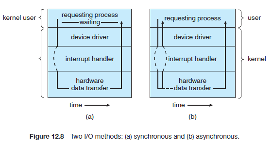
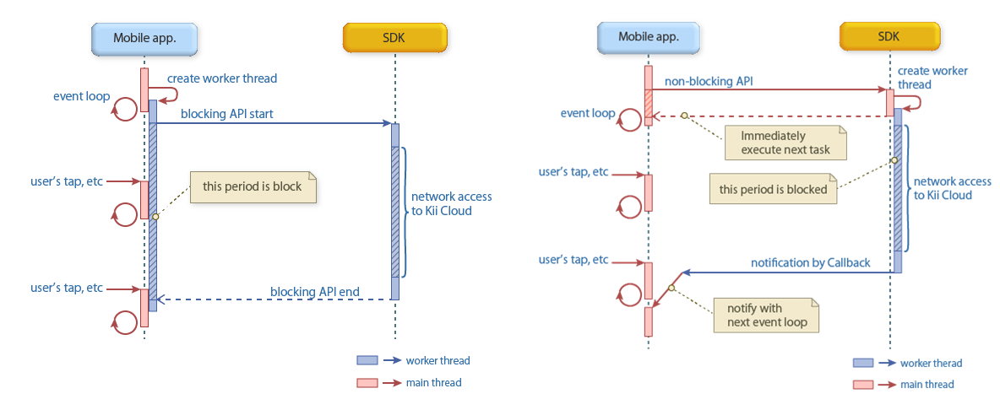
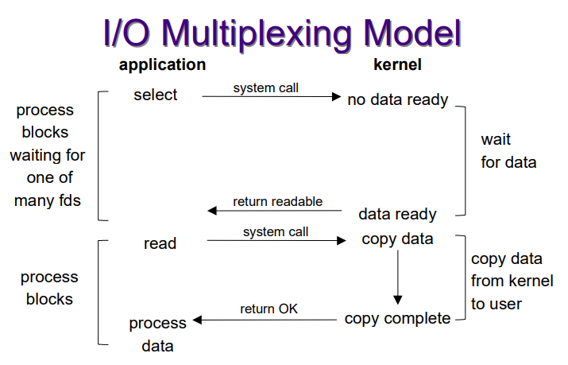
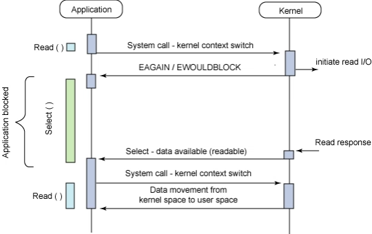
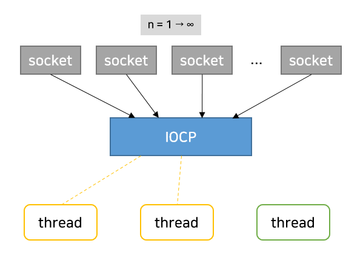
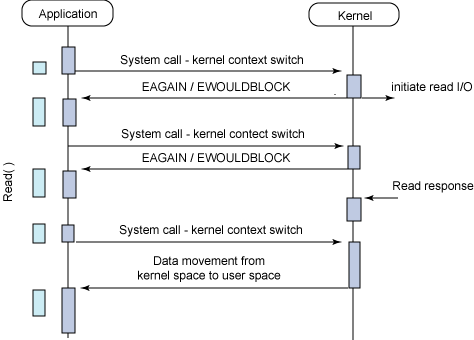

[OS] 동기-비동기, 블로킹-논블로킹 알아보기 (w. I/O 멀티플렉싱)
서론
CS 스터디에서 10월 22일 발표한 동기와 비동기, 블로킹과 논블로킹에 대해 정리한 문서를 블로그에 공유하고자 한다.
동기와 비동기, 블로킹과 논블로킹의 차이에 대하여
- 두 가지 모두 “연관 되어있는 프로세스/함수간의 작업 순서"에 대해 설명하는 유사한 개념으로 볼 수 있음.
- 하지만 어떠한 것을 중점으로 두는 개념인가는 다름.
동기 - 비동기작업 순서,호출 시점에 중점A 함수가B 함수를 호출하고, 그결과를 기다린 뒤이를활용해 다음 로직을 수행하는 함수라면,동기적
블로킹 - 논블로킹실행 제어권에 중점A 함수가B 함수를 호출하고, 제어권을 넘겨준다면블로킹
- 하지만 어떠한 것을 중점으로 두는 개념인가는 다름.
동기 - 비동기

출처: Operating System Concepts, 9th Edition
동기
- 앞의 작업이 완료되어야 이후의 작업이 시작되는 순차적인 처리방식
- 즉,
작업의 순서가보장됨
- 즉,
비동기
- 앞의 작업이 완료되길 기다리지 않고 다음 작업을 실행할 수 있는 방식
- 즉,
작업의 순서가보장되지 않으며,병렬로 작업이 실행 가능함- 이는 각 작업이
독립적이거나, 작업 별지연시간이 긴 경우효율적
- 이는 각 작업이
- 즉,
- 프로세스 실행 뿐만 아니라,
I/O 작업역시비동기적으로 처리 가능- 주로 미리 애플리케이션의
일부 주소 공간에 변수를 설정하거나, 애플리케이션 제어 흐름 외부에서 동작하는신호(signal),콜백의 트리거등을 통해 미래에 I/O 작업이 완료되면 애플리케이션 값을 전달 - 즉, 결과 값을 기다리지 않고 일단 바로 반환함
- 주로 미리 애플리케이션의
블로킹 - 논블로킹 (I/O 작업을 예시로)

블로킹
- 파일 읽기, 네트워크 요청 등의
I/O 작업을 수행하는 경우, 해당 작업이완료될 때까지프로그램실행 멈춤- 블로킹 I/O 작업이 호출되면
작업(프로세스)는실행 대기열(run queue)에서대기 대기열(wait queue)로 이동하며,I/O 작업이 완료되면작업은 다시실행 대기열로 이동함.- 이때 실행이 재개되면서
I/O 작업으로 부터반환된 값을 받음.
- 이때 실행이 재개되면서
- 즉,
프로그램 실행 제어를I/O 작업에게 넘긴다고 볼 수 있음
- 블로킹 I/O 작업이 호출되면
- 대부분의
애플리케이션 인터페이스에서는블로킹 시스템 콜사용블로킹방식이논블로킹방식보다 코드 이해가 쉽기 때문
논블로킹
I/O 작업을 수행하는 동안에도 프로그램 실행멈춤 없이계속 프로그램 작업 수행- 주로
이벤트 기반이거나,콜백 함수를 사용하는 비동기 방식에서 사용됨. - 이외에도
키보드-마우스 입력을 받아 데이터 처리 및 표시하는UI,디스크 파일 읽어서디스플레이에 출력하는비디오 프로그램등이 대표적인논블로킹 I/O예시
- 주로
동기이면서 논블로킹이고, 비동기이면서 블로킹인 경우는 의미가 있다고 할 수 있는가?
두 경우 모두 결과적으로 동기적으로 동작하는, 각각의 특성을 살리지 못하는 방식이라고 볼 수 있음
동기 - 논블로킹
논블로킹방식이므로I/O 작업을 수행하는 도중에도 원래 작업(프로세스)을 계속 실행할 수 있음실행 제어권을 넘기지 않기 때문
- 하지만
동기방식이므로I/O 작업결과가 반환될 때 까지 다음 작업을 수행할 수 없음- 계속
Polling(프로세스가 실행 가능한 상태를 유지하며 이벤트를 기다리는 것)하며 결과 값을 기다림
- 계속
- 결과가 반환될 때까지, 결과가 필요한 이후 작업들을 수행하지 못하므로
사실상 블로킹형태로 동작- 다만, 결과가 필요하지 않은 작업들을 수행할 수 있는 경우 유의미
비동기 - 블로킹
비동기방식이므로 현재 프로세스가 끝나지 않았어도 다른 작업을 수행할 수 있음- 하지만
블로킹방식이므로,I/O 작업을 수행하는 경 현재 프로세스의 실행 제어권을I/O 작업에게 넘기므로 해당 작업이 끝나기를 기다려야 함I/O 작업이 잦은경우사실상 동기형태로 동작
I/O 멀티플렉싱이란?


출처 : developer.ibm.com
멀티플렉싱통신에서 여러시그널또는정보 스트림을 하나의 복잡한 신호로 동시에 전송하는 것
I/O 멀티 플렉싱?비동기 블로킹 I/O를 부르는 또 다른 말로,하나의 프로세스가여러 파일을 관리할 수 있도록 해주는 기법- 프로세스에서 파일에 접근할 때
파일 디스크립터(File Descripter, FD)라는 추상적인 값을 사용- 이
파일이라는 것엔 클라이언트와의 연결에 사용되는소켓같은 것도 포함됨소켓역시IP/Port를 가진 파일이기 때문
- 이러한 점에서
다중 클라이언트 연결을 지원하기 위한대안적인 접근 방식이라고도 불림
- 이
- 프로세스에서 파일에 접근할 때
- FD를 어떻게 감시하는지, 어떤 상태로 대기하느냐에 따라
select,poll,epoll(linux),kqueue(bsd),iocp(windows)와 같은 기법들이 존재- 메인 서버 루프는
select,poll시스템 콜을 통해어떤 FD가 준비되었는지확인- 즉,
read또는write작업은block 없이 바로 수행됨
- 즉,
- 메인 서버 루프는
동시성을 위해프로세스/스레드를 사용하는 것에 비해다음과 같은 장/단점이 존재- 장점: 프로세스/스레드 보다 클라이언트 연결 당
오버헤드(CPU, 메모리)가 적음 - 단점:
코드 복잡성이 증가함
- 장점: 프로세스/스레드 보다 클라이언트 연결 당
I/O 멀티 플렉싱의 일반적인 흐름애플리케이션에서read요청커널은read I/O처리를 시작함과 동시에,애플리케이션에게미완료상태(EAGAIN, 리소스를 일시적으로 사용할 수 없음)임을 반환애플리케이션은 데이터가 준비되었다는 알람이 올 때 까지 기다림(select())커널에서 결과 값이 준비되었다는 callback 신호를 보냄애플리케이션은 데이터를커널 공간에서사용자 공간(buffer)으로 복사해옴- 실제 구현에서는
select호출의 유의미한 값이 나올때 까지 애플리케이션은 loop를 돌며 대기
- 실제 구현에서는
I/O 멀티플렉싱의 여러 구현 방식
select()
#include <sys/select.h>
int select(int nfds, fd_set *readfds, fd_set *writefds, fd_set *exceptfds, struct timeval *timeout);
- 대상
FD를배열에 집어넣고하나하나 순차 검색하는 방식O(n)의 시간복잡도를 가짐(대상 FD가 늘어날수록 오래 걸림)
- 이
배열형태의 구조체를fd_set이라고 부르며, 각n번째 비트는n-1 FD에 대응됨- 해당 비트가
1이면,대응되는 파일에 변경이 감지되었음을 의미 - 변경을 감지하려면, 매 번
최대 FD 개수만큼 loop를 돌며 비트 값 하나하나를 검사해야 함
- 해당 비트가
고정된 단일 bit table을 사용하므로 관리할 수 있는 최대 FD 수가 1024개로 제한됨
pselect()
int pselect(int nfds, fd_set * readfds, fd_set * writefds, fd_set * exceptfds, const struct timespec * timeout, const sigset_t * sigmask);
select에서timeout과signal 처리 로직을 개선한 함수timespec구조체를 사용해 나노초까지 정밀한 컨트롤 가능sigmask인자를 활용해signal에 의한 인터럽트발생시 block 시킬 수 있음
poll()
#include <poll.h>
int poll(struct pollfd * fds, nfds_t nfds, int timeout);
하나 이상의 FD에서 이벤트 발생시,Blocking 해제한 뒤해당 FD로 들어온 데이터에 대한I/O 작업을 수행하는 방식관리 가능 FD 수에 제한이 있던select와 달리무한 개의 FD를 검사할 수 있는 함수
실제 FD 개수(nfds)만큼만 loop를 돌아, FD 갯수가적은 경우select대비 효율적일 수 있음- 다만
이벤트 전달에 사용되는메모리가 커(64bit,select는 3bit)FD 수에 따라성능이 안좋아 질 수 있음
- 다만
epoll (linux)
#include <sys/epoll.h>
// create
int epoll_create(int size);
// wait
int epoll_wait(int epfd, struct epoll_event * events,
int maxevents, int timeout);
// control
int epoll_ctl(int epfd, int op, int fd, struct epoll_event * event);
poll()과 유사하지만,FD의 상태를커널에서 관리해 상태가 바뀐 것을 직접 통지해 주는 방식- 애플리케이션에서
루프를 돌 필요도 없고,변화가 감지된 FD의 목록을 반환받으므로,대상 파일을 추가 탐색할 필요도 없음
- 애플리케이션에서
Edge Trigger,Level Trigger두 가지 방식이 존재Level Trigger- 특정 상태가
유지되는 동안감지 입력 buffer에데이터 남아있는 동안계속 이벤트 등록
- 특정 상태가
Edge Trigger- 특정 상태가
변화하는 시점에만 감지 입력 buffer로 데이터수신된 그 상황에 한 번만 이벤트 등록
- 특정 상태가
kqueue (bsd)
#include <sys/event.h>
// event를 저장할 새 Queue 커널에 요청
int kqueue(void);
// kqueue에 특정한 이벤트를 등록하고, 보류중인 이벤트를 등록하거나 사용자한테 반환
int kevent(int kq,
const struct kevent * changelist, int nchanges,
struct kevent * eventlist, int nevents,
const struct timespec * timeout);
- 커널에 이벤트를 저장할
queue를 생성하면,I/O 이벤트가queue에 쌓이고사용자가 직접polling하는 방식select,poll처럼 발생한FD를 찾는 추가 작업 필요 X
iocp (windows)

- 윈도우에서 지원하는 I/O 다중화 모델
여러 소켓을 하나의IOCP 객체로 처리- 해당 객체 하위에서 동작하는
thread 여러 개가동시 대기 - 커널로부터 받는 결과에 따라
thread를 깨우거나 대기
- 해당 객체 하위에서 동작하는
완료 루틴(Completion Routine)으로 I/O 작업 완료 통지를 받는 형태로 설계됨완료 루틴은콜백 함수와 비슷한 역할로,WSASend/WSARecv함수를 호출해I/O 작업이 완료된 시점에 호출됨
논블로킹 I/O에서 결과를 수신하는 방법?

대부분의 논블로킹 프레임워크에서는 논블로킹 I/O의 결과를 수신하기 위해 지속적으로 polling하는 무한 루프, 흔히 이벤트 루프라고 부르는 것을 사용합니다.
애플리케이션에서는 지속적으로 커널에게 read 요청을 보내고, 커널에서는 아직 데이터가 준비되지 않은 경우 EAGAIN/EWOULDBLOCK 오류 코드(‘리소스를 일시적으로 사용할 수 없음’을 의미)를 반환합니다.
만약 데이터가 준비된 경우, 애플리케이션은 커널로부터 데이터를 사용자 공간(buffer)으로 복사해옵니다.
오류 코드를 수신한 시점에 애플리케이션은 read 요청을 또 보낼 지 선택할 수 있어 애플리케이션은 Block되지 않습니다.
이외에도 I/O 작업이 완료된 경우 수행되는 콜백 함수를 설정하거나, I/O 작업이 완료되었다는 signal이 수신되는지 감지하는 방법 등 다양한 방법이 존재합니다.
참고
- Lecture 33: I/O multiplexing - David Hovemeyer
- [네이버클라우드 기술&경험] IO Multiplexing (IO 멀티플렉싱) 기본 개념부터 심화까지 -1부- : 네이버블로그
- [네이버클라우드 기술&경험] IO Multiplexing (IO 멀티플렉싱) 기본 개념부터 심화까지 -2부- : 네이버블로그
- How does non-blocking IO work under the hood? | by Hielke de Vries | ING Blog | Medium
- CSC 209H: Software Tools and Systems Programming - Summer 2006 - Week11-Select.pdf
- errno(3) - Linux manual page
- 추가로 볼만한 자료